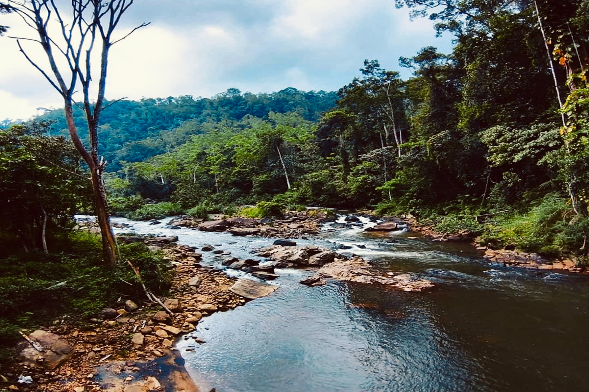
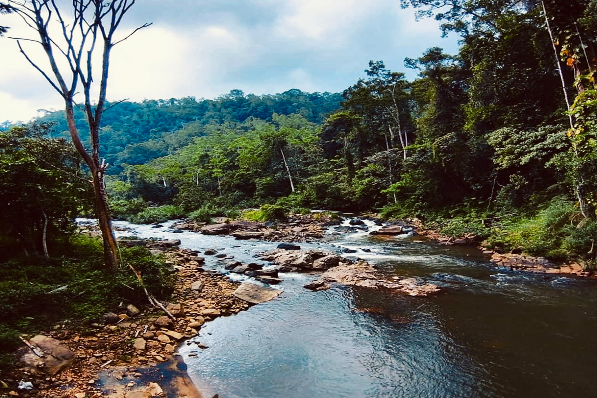
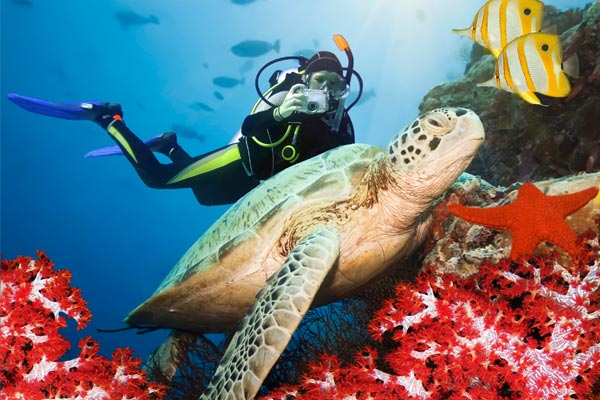
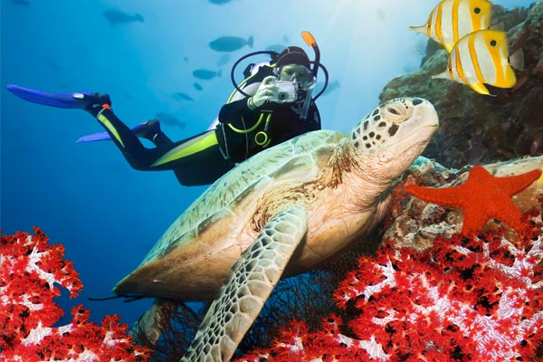

Sri Lanka's Department of Wildlife Conservation has a long and noteworthy history that reflects the country's dedication to protecting its natural biodiversity. Since its founding in 1949, the department has been essential to the administration and conservation of the island's biodiversity. The department's initial efforts were devoted to setting up reserves and protected areas to preserve Sri Lanka's unique native plants and animals.
The agency has modified its tactics throughout the years to deal with the problems caused by poaching, habitat destruction, and human-wildlife conflict. The Department of Wildlife Conservation oversees and manages national parks, wildlife sanctuaries, and forest reserves, all of which are examples of Sri Lanka's dedication to wildlife conservation. For many animals, including as the magnificent Asian elephant, the elusive leopard, and numerous rare bird species, these protected regions are essential habitats.
To find a balance between conservation efforts and the needs of local communities, the department has also been actively involved in research and community involvement activities. The department works to ensure that wildlife and human populations coexist sustainably by promoting sustainable coexistence through a number of projects.
The Department of Wildlife Conservation has embraced technology developments in recent years to improve its capacity for protection and monitoring. This covers the application of contemporary monitoring methods, tracking devices for wildlife, and community-based conservation initiatives. The department is adamant about preserving Sri Lanka's natural legacy for future generations even as the nation continues to face changing environmental problems. Sri Lanka's commitment to environmental conservation and the peaceful coexistence of its people and wildlife is demonstrated by the Department of Wildlife Conservation's history.
The country's diverse ecosystem depends on the protection of Sri Lanka's protected areas. These spaces are essential to preserving ecological harmony and promoting the health of a wide variety of plant and animal species. In addition to their importance for conserving biodiversity, these protected areas help to raise public knowledge of and appreciation for the environment. Education campaigns and ecotourism projects built around these themes contribute to a greater public understanding of the value of environmental conservation.
Furthermore, the protected areas frequently act as real-world labs for scientific studies, offering insightful information on the behavior of wildlife and ecological processes. In order to make these regions robust to changing environmental problems, ongoing efforts are made to improve their sustainability and management. The cooperative efforts of numerous governmental and non-governmental organizations are devoted to the preservation of Sri Lanka's natural heritage, demonstrating a shared commitment to the peaceful coexistence of people and the environment.
There are twenty-eight National Parks across the country that offer tourists possibilities for science, education, recreation, and the arts. The provisions of the Fauna and Flora Protection Ordinance have been declared for these places. When a visitor pays the required fee and receives a permission from a designated Department of Wildlife Conservation officer, they are permitted to enter the national park subject to certain limitations. The nation's oldest national parks are Wilpattuwa and Yala. Udawalawa, Wilpattu, Horton Plains, and Yala are the nation's most popular national parks. Maduruoya, Udawalawa, and Galoya are examples of national parks that were established to safeguard catchment areas and to provide as habitats for species that had been uprooted by large-scale irrigation operations. The definition of a national park aligns with the IUCN's category II protected areas.


 


A Marine National Park's legal regulations are quite similar to those of a National Park established under the Fauna and Flora Protection Ordinance. Marine national parks are open to the public for the purpose of seeing and researching the local flora and wildlife. However, prior to the creation of the Marine National Park, any activity that was carried out in accordance with a law, custom, use, or traditional practice is permitted under strict restrictions. In accordance with the terms of the Fauna and Flora Protection Ordinance, Adam's Bridge was designated as Sri Lanka's first Marine National Park.Hikkaduwa National Park is renowned for its coral reefs and abundant marine life. It is located off the southern coast. The coral formations, tropical fish, and other marine life were the reasons behind the creation of the park.The seas surrounding the Kalpitiya Peninsula, which is located on the northwest coast, are home to a variety of marine life, including whales and dolphins. The region has drawn attention for conservation initiatives and is well-known for its whale-watching potential.Bentota Ganga Estuary: This estuary is situated on the coast to the southwest. It serves as a protected area for the preservation of biodiversity and is a vital home for many marine and avian species.

 
